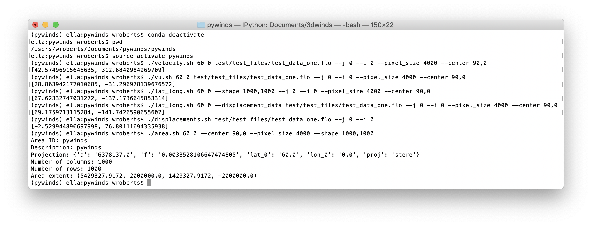

Examples¶

(pywinds) ella:ls
in.flo
(pywinds) ella:pywinds/wind_info.py 60 0 100 --j 0 --i 0
--pixel_size 4:km --center 90,0 --no_save
[67.62, -137.17, 42.33, 317.58, 31.25, -28.55]
(pywinds) ella:pywinds/wind_info.py 60 0 100
--pixel_size 4:km --center 90,0
(pywinds) ella:pywinds/lat_long.py 60 0 --j 0 --i 0
--pixel_size 4:km --center 90,0 --shape 1000,1000 --no_save
[67.62, -137.17]
(pywinds) ella:pywinds/velocity.py 60 0 100 --j 0 --i 0
--pixel_size 4:km --center 90,0 --no_save
[42.33, 317.58]
(pywinds) ella:pywinds/velocity.py 60 0 100
--pixel_size 4:km --center 90,0
(pywinds) ella:pywinds/vu.py 60 0 100 --j 0 --i 0
--pixel_size 4:km --center 90,0 --no_save
[31.25, -28.55]
(pywinds) ella:pywinds/vu.py 60 0 100
--pixel_size 4:km --center 90,0
(pywinds) ella:pywinds/lat_long.py 60 0 --j 0 --i 0
--pixel_size 4:km --center 90,0 --displacement_data "'*.flo'" --no_save
[65.94, -133.28]
(pywinds) ella:pywinds/lat_long.py 60 0
--pixel_size 4:km --center 90,0 --displacement_data "'*.flo'"
(pywinds) ella:pywinds/displacements.py --j 0 --i 0 --no_save
[-2.53, 76.8]
(pywinds) ella:pywinds/displacements.py --j 1 --i 0 --no_save --shape 100,10000
[-3.03, 79.19]
(pywinds) ella:pywinds/displacements.py --j 1 --i 0 --no_save --pixel_size 4
--center 90,0 --radius 200,20000 --units km
[-3.03, 79.19]
(pywinds) ella:pywinds/displacements.py
(pywinds) ella:pywinds/area.py 60 0 --pixel_size 4:km --center 90,0 --no_save
projection: stere
lat_0: 60
lon_0: 0
semi-major axis radius: 6378137.0
eccentricity: 0.003353
area_extent: (67.6, 137.18, 65.81, -47.35)
shape: (1000, 1000)
pixel_size: (4000.0, 4000.0)
center: (90.0, 0.0)